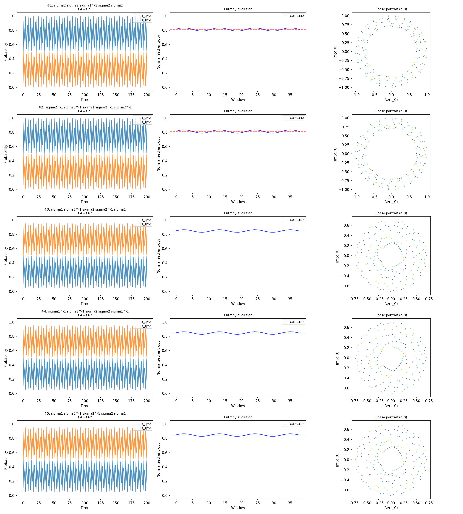
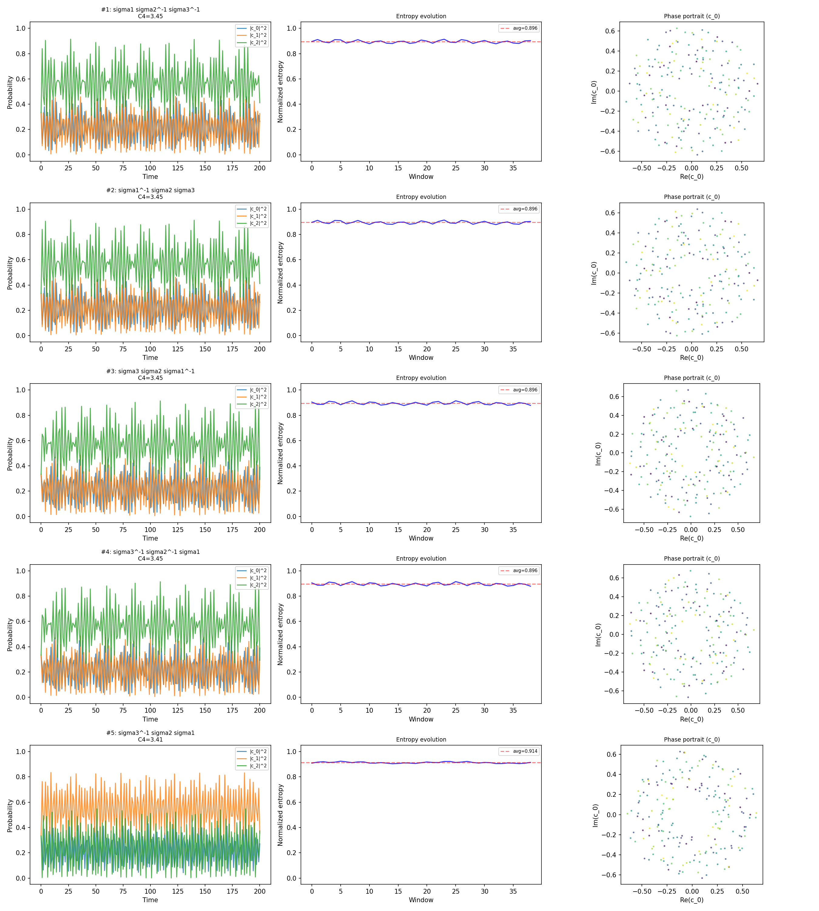

NKS enumeration of Fibonacci anyon braiding rules, classified by Wolfram's four complexity classesWolfram's classification of dynamical system behavior: Class I (dies out), Class II (repeats), Class III (random/chaotic), Class IV (complex — structured but not repeating, capable of computation). Rule 110 is the canonical Class IV example.
This search systematically enumerates braiding rules on Fibonacci anyons and classifies the resulting dynamics by Wolfram's four complexity classes (the NKS approach).1 The goal: determine whether any braiding rule on a finite fusion space can produce genuine Class IVThe rarest complexity class — behavior that is neither periodic nor purely random, but structured enough to support computation. Cellular automata Rule 110 and Conway's Game of Life exhibit Class IV dynamics. (complex) behavior—the kind of dynamics that supports computation.
Fibonacci anyons have two particle types: 1 (vacuum) and τ. Their fusion ruleThe rule governing what particle types result when two anyons combine. For Fibonacci anyons, τ × τ = 1 + τ — fusing two τ particles produces either vacuum (1) or another τ, with probabilities determined by the quantum state. is τ × τ = 1 + τ. For n anyons fusing left-to-right, the state space dimension follows the Fibonacci sequence: F(n−1). Braiding is represented by unitary matrices (R-matricesMatrices encoding the phase acquired when two anyons are exchanged. For Fibonacci anyons, these are 2×2 unitary matrices with entries involving the golden ratio. The fundamental building blocks of braiding operations. composed with F-matricesMatrices encoding the associativity of fusion — how regrouping three anyons (fusing AB first vs BC first) relates the two bases. Together with R-matrices, they completely determine the braiding behavior.) acting on this fusion space.
Braid word enumeration. For n=3 anyons (2D fusion space), the braid groupThe mathematical group describing all possible particle exchanges. Elements are sequences of neighbor swaps (braids). Unlike permutations, braids track the path of exchange — swapping clockwise differs from swapping counterclockwise. generators are σ1 and σ2, each with an inverse. A braiding rule is a word in {σ1, σ1−1, σ2, σ2−1} of length 1 through 5. This gives:
Classification. Each rule is iterated 200 times from a random initial state. The trajectory is classified by:
Physics verification. Each composite braid matrix is checked for unitarity (σσ† = I) and eigenvalue structure. Yang-BaxterA consistency equation for particle exchanges: swapping A-B, then B-C, then A-B must equal B-C, then A-B, then B-C. Physical R-matrices always satisfy this. Violation would mean the braiding depends on how you decompose the exchange sequence. satisfaction is verified for the physical R-matrices.
| Class | Count | Percentage | Description |
|---|---|---|---|
| I (fixed) | 268 | 19.6% | Trajectory converges to eigenstate |
| II (periodic) | 736 | 54.0% | Rational eigenvalue phases → exact recurrence |
| III (chaotic) | 0 | 0.0% | None found |
| IV (complex) | 360 | 26.4% | Quasi-periodic candidates |
| Class | Count | Percentage | Description |
|---|---|---|---|
| I (fixed) | 6 | 2.3% | Trajectory converges to eigenstate |
| II (periodic) | 196 | 76.0% | Rational eigenvalue phases → exact recurrence |
| III (chaotic) | 0 | 0.0% | None found |
| IV (complex) | 56 | 21.7% | Quasi-periodic candidates |
Critical observation: Zero Class III in both searches. And the "Class IV" candidates are not genuinely complex—they are quasi-periodic, as explained below.
This is provable from first principles. A braiding rule acts as a unitary matrixA matrix whose inverse equals its conjugate transpose. Preserves vector lengths (probabilities sum to 1) and is reversible. All quantum evolution without measurement is unitary. Key consequence: no information is created or destroyed. U on the fusion space. Iteration produces the sequence U, U2, U3, ... The eigenvalues of U are phases eiθj. After n iterations, the state components evolve as einθj.
This evolution is linear and norm-preserving. The Lyapunov exponent is exactly zero: nearby trajectories neither converge nor diverge. There is no sensitive dependence on initial conditions.
If all eigenvalue phases θj/2π are rational, the trajectory is exactly periodic (period = LCM of denominators). If any phase is irrational, the trajectory is quasi-periodicMotion combining frequencies with irrational ratios. Never exactly repeats, but isn't chaotic — it densely fills a torus. Like two clocks ticking at rates whose ratio is the golden number. Zero entropy rate: no genuine surprise.—it never exactly repeats but fills a torus densely. This quasi-periodicity can mimic complexity over short timescales, which is why these candidates appear as "Class IV" in the NKS classifier. But they are not genuinely complex: they have zero entropy rateThe rate at which a system generates genuinely new information per time step. Periodic and quasi-periodic systems have zero entropy rate (no surprises ever). Chaotic systems have positive entropy rate. A key test for genuine complexity. and no computational capacity.2
The 360 Class IV candidates (n=3) all have irrational eigenvalue phases related to φ = (1+√5)/2. They are dense quasi-periodic orbits on a 2-torus, not complex dynamics.
Complexity cannot emerge from single-rule repetition on a finite-dimensional Hilbert space. This is a structural limitation, not a failure of search: the mathematics of unitary evolution forbids it.
For genuine complexity to arise from anyon braiding, we need spatial extent: a lattice where different braiding rules operate at different sites, producing emergent spatiotemporal patterns that are not captured by any single unitary matrix. This is the motivation for the lattice extension.

Class IV candidates for n=3 Fibonacci anyon braiding. The apparent complexity is quasi-periodic: dense orbits on a torus, not genuine chaos. All trajectories have Lyapunov exponent exactly zero.

Class IV candidates for n=4 Fibonacci anyon braiding (3D fusion space). Higher-dimensional quasi-periodic orbits, still with zero Lyapunov exponent. The richer structure comes from three eigenvalue phases rather than two.